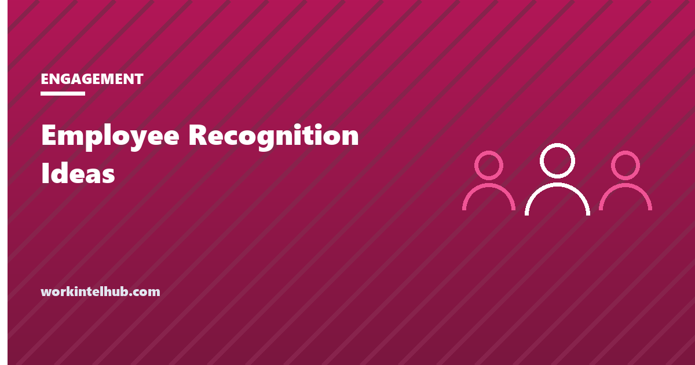

Employee Recognition Ideas

Recognition is telling someone that a specific thing they did was noticed and mattered. Done that way it is one of the cheapest levers a manager has: Gallup's research finds employees who receive regular recognition are about four times as likely to be engaged, and those who do not receive it are twice as likely to say they will leave within a year; yet only about one in three US workers strongly agree they were recognised in the past week. The gap is not budget. Most effective recognition costs nothing. The gap is managers not doing it, or doing it in the generic form ("great job, team") that carries no information.
The picker below filters twenty-four ideas by budget, setting and who gives them. The rest of the page covers what the evidence says works, the rules that separate recognition from noise, how to build a programme without turning it into a points scheme, and what to avoid.
Recognition idea picker
Every idea assumes the same rule: name the specific thing the person did and why it mattered. Recognition without the specific is a gesture; with it, it is information.
What the evidence says
Gallup's workplace research on recognition, conducted across thousands of employees, is the most cited body of evidence and its findings are consistent: recognition that is frequent (weekly is the threshold in the survey item), specific and from a source the employee values (the direct manager first, then a senior leader, then peers) predicts engagement, intent to stay and, in Gallup's estimates, productivity. Its most-quoted finding is that the most memorable recognition comes from the employee's manager (28 per cent) or a high-level leader or CEO (24 per cent), with public recognition and private conversation both valued.
The turnover link is the one that pays for the programme. Recognition is among the top reasons people give in exit interviews for leaving, usually phrased as "nobody noticed"; with turnover replacement cost commonly estimated at a third to half of salary, and the HR metrics page putting median turnover around 9 per cent, a manager who recognises specifically and weekly is doing retention work whether or not the company calls it that. The engagement ideas and remote engagement guides sit alongside this one.
The rules that make it land
- Specific. What they did, and what it changed. "Thanks for staying late" is a gesture; "your rewrite of the onboarding doc is why the two new hires were productive in week two" is information the person can act on and repeat.
- Timely. The same week. Recognition at the annual review for something done in March is a reminder that nobody noticed in March.
- From the right person. The manager first. Peer recognition adds to it; HR recognition does not substitute for it.
- Proportionate. A note for a good week, a bonus or a project for a quarter-changing result. A gift card for a career-level contribution is an insult with a receipt.
- Matched to the person. Some want the public announcement; some would rather it were private. Ask once, early, and remember.
- Fair. Recognition that always goes to the same three people, or to the people the manager sees most, is noticed by everyone else. Track roughly who has been recognised; the gaps are usually quiet, remote or shift-based people whose work is less visible.
- Separate from correction. "Great work on the report, but" is correction with a warm-up. Do the two things on different days.
Building a programme without a points scheme
Formal recognition programmes fail in a predictable way: they become a currency. Points for behaviours, leaderboards, a catalogue of merchandise, and within a year the recognition has become a transaction that nobody experiences as being noticed. The research on rewards is old and clear: extrinsic incentives attached to an activity reduce intrinsic interest in it, and recognition converted into a reward schedule stops working as recognition.
The programme that works is thinner. A budget each manager controls for spot bonuses and small gestures, with a one-line rule that every use names the specific work. A peer mechanism, a monthly nomination read out at the team meeting, or a small quarterly budget each employee can spend thanking a colleague. Service anniversaries marked with a personal note from the manager rather than a catalogue gift. A fixed slot in the monthly all-hands for two or three named contributions from across the company. And a single measure: the share of employees who say, in the pulse or engagement survey, that they were recognised for good work in the past week. If that number is not moving, the programme is decoration.
What to avoid
- Employee of the month. One winner, eleven losers, and by month four the award rotates by politics rather than performance.
- Recognition for attendance. Rewarding perfect attendance penalises sick employees for staying home and, where the absence was protected leave, creates legal exposure. See the absenteeism guide.
- Generic praise at scale. The all-hands "thank you to everyone who worked so hard this quarter" recognises no one.
- Recognition as a substitute for pay. A team that is underpaid by market knows it, and a pizza party in that context is a grievance. The pay raise calculator is the other page.
- Cash so small it reads as a valuation. $10 for a saved account is worse than a handwritten note.
- Tax surprises. Cash and gift cards are taxable wages and go through payroll; only genuinely minor non-cash items (the occasional meal or low-value gift) fall under the de minimis fringe exclusion. Tell people before the bonus shows up short.
Key takeaways
- Recognition is telling someone that a specific thing they did was noticed and mattered. The specific is the whole method.
- Gallup: regularly recognised employees are about four times as likely to be engaged, unrecognised ones twice as likely to plan to leave, and only a third are recognised weekly.
- Most effective recognition is free: specific thanks, a note from the manager or a senior leader, first pick of a project, an afternoon off.
- Rules: specific, the same week, from the manager first, proportionate, matched to the person, fair across visible and invisible people, separate from correction.
- Programmes fail when they become points and catalogues. Keep them thin and measure one thing: recognised in the past week.
- Avoid employee of the month, attendance awards, generic praise, recognition instead of pay, and tax surprises on cash.
Frequently asked questions
What are the best employee recognition ideas that cost nothing?
Specific thanks in the team meeting naming what the person did and why it mattered; a handwritten note from the manager or a note from the manager's manager; forwarding a customer's thanks with the person named; first pick of the next interesting project; an afternoon off the same week; and presenting their own work to leadership with the credit attached.
How often should employees be recognised?
Weekly is the threshold in Gallup's survey research, and only about one in three US employees strongly agree they were recognised in the past seven days. Recognition needs to be earned by specific work, so the frequency is really a measure of whether the manager is paying attention, not a quota.
Does employee recognition improve retention?
The evidence says yes. Gallup finds employees who do not feel adequately recognised are about twice as likely to say they will quit in the next year, and lack of recognition is among the most common reasons given in exit interviews. Given replacement costs of a third to half of salary, specific weekly recognition is inexpensive retention work.
Should recognition be public or private?
It depends on the person; ask once, early, and remember. Many people value public recognition from a senior leader, and Gallup finds the most memorable recognition comes from the manager or a high-level leader. Some prefer a private conversation. Public recognition of a person who dislikes it is not recognition.
Are employee recognition awards taxable?
Cash and gift cards are always taxable wages and must go through payroll with withholding. Non-cash items of low value given occasionally, such as a meal or a small gift, can fall under the de minimis fringe benefit exclusion. Tangible-property length-of-service awards have a separate, limited exclusion. Tell employees before a bonus arrives net of tax.
Why do recognition programmes stop working?
Because they become currencies: points, leaderboards and merchandise catalogues turn being noticed into a transaction, and extrinsic rewards attached to an activity reduce intrinsic interest in it. Programmes that last are thin: a manager budget with a name-the-work rule, a peer mechanism, personal anniversary notes, and one measure tracked in the engagement survey.